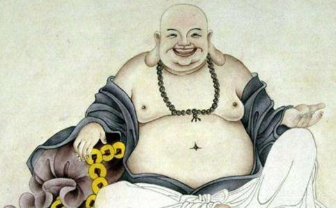

大肚
那么，弥勒佛是如何成佛的呢？事情是这样的：
当时，阿那律尊者说完自己的故事，
阎浮提的土地变得方正，到处是平原，没有山川。地上长出柔软的草，就跟天衣一样。当时人民的
那时，弥勒
当时，弥勒听到佛祖说贤劫第五尊佛的故事，就长跪对佛祖说：我愿意做那位弥勒佛。佛祖告诉他：正如你所发愿的，你将来就是那位弥勒佛，刚才说的度化众生的事迹，都是你将来成就的。当时，会上还有一位比丘，名叫阿侍多，也长跪对释迦牟尼佛说：我愿意当那个时候的转轮王。佛祖告诉他：你啊，在漫漫长夜中，贪图快乐，不能了脱
当时，大众听到佛祖为弥勒比丘授记成佛，还叫弥勒佛，都很想知道里面的故事。阿难尊者就起身问佛祖：弥勒成佛，还叫弥勒，不知道这个名字有什么来历呢？
佛祖告诉阿难尊者：认真听，认真思考。过去无量阿僧祇劫的时候，阎浮提有一位大国王，名叫昙摩留支，统领阎浮提，管辖84000国，6万山川，800亿村落，有2万夫人宫女，1万大臣。
当时，有一个小国很富裕，国王名叫波塞奇，当时，弗沙佛刚刚成佛，就在这个国家度化众生。波塞奇王和大臣都专心供养弗沙佛和众僧，没空去朝见昙摩留支王，也没空去朝贡，连消息都没有了。当时，昙摩留支王就责怪他，派使者去问责。
使者到了之后，就宣读昙摩留支王的命令：这一年以来，连音信都没有了，你作为臣子，为什么违背常理呢？你是不是准备造反啊？当时，波塞奇王自知理亏，不知道怎么办，于是就去见佛。弗沙佛说：大王不要担心，你就回答说，佛在我国，早晚侍奉佛，所以没空觐见大王，国内的财物，也用于供养佛和僧众，没有东西可以朝贡大王。波塞奇王听了之后，就按照弗沙佛的说法回复使者。使者就回去禀告昙摩留支王。
昙摩留支王听了之后，大发雷霆，召集诸臣商议，大家都说：那个波塞奇王桀骜不驯，我们应当去攻打他。昙摩留支王就亲自带兵过去讨伐波塞奇王。军队到了附近，波塞奇王才知道，于是非常害怕，赶紧去见弗沙佛。佛祖说：不用担心，你亲自去见昙摩留支王，还是用前面那个理由解释。
波塞奇王就带领群臣，前往边界拜见昙摩留支王，
当时，昙摩留支王又责问他：你为什么中断了朝贡呢？波塞奇王说：佛祖的徒众叫做众僧，持戒清净，是世间所有人民的优质
当时弗沙佛被大众围绕，都各自
弗沙佛告诉昙摩留支王：这位比丘入了慈三昧。大王听到之后，更加钦佩敬仰，说这个慈定居然有这样的光明啊，我也要学啊，我也要学习慈无量心啊。发了这个愿之后，非常羡慕慈三昧，心意变得非常柔软，不再有杀害之心。当时，他就请佛和众僧去他的首都
当时，波塞奇王听到弗沙佛要去昙摩留支王的首都，心里恋恋不舍，又有些怨恨，心想：如果我是大王，那就要让佛祖
于是他就问弗沙佛：各种王当中，什么王最大啊？弗沙佛说：转轮王最大。波塞奇王于是就发愿说：希望以我供养佛和众僧的功德，发愿希望世世常作转轮王。
当时那位穿珠师听到阿那律等多位尊者以及佛祖所说的故事，这才知道自己虽然损失了十万佣金，却捡了一个比天还大的便宜啊。于是也发了无上菩提心。其他与会者，听到佛祖所说，有的证了初果乃至四果，有的发了无上菩提心，有的住于不退转地，大家都